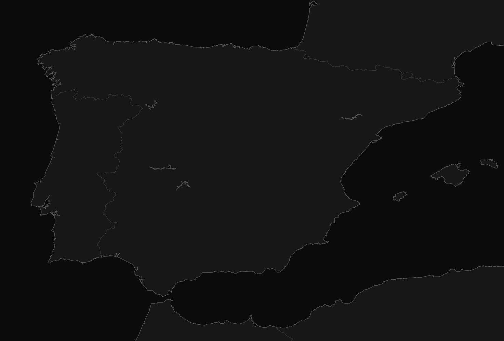

Retail and spatial design · technical development · production preparation
I turn design concepts into clear, production-ready projects.
I am an architecture graduate trained in Venezuela and based in Spain. I work across retail and spatial design, technical development and production preparation—developing layouts and drawings, tracking procurement, and checking that materials and project information are ready for fabrication and handover to the person responsible for installation.
IIWhat does a temporary store need before work begins on site?Preparing a temporary retail environment
IKKS pop-up in San Sebastián de los Reyes
A clear technical package for a short installation window: dimensions, elevations, fitting rooms, storage and point of sale resolved before work began on site.
IIIHow can one brand stay recognisable across different spaces and formats?Connecting brand, space and communication
Japon Market 24h
Interior layouts, technical drawings, 3D visualisation, packaging, editorial pieces, social media and web content developed as parts of the same visual system.
Spatial thinking translated into usable project information
01
Design
Retail environments, spatial planning, furniture concepts and brand-led interiors.
02
Technical development
Site surveys, plans, elevations, details, schedules and coherent project documentation.
03
Production preparation
Procurement follow-up, material-availability checks and coherent information prepared for fabrication and handover to the person responsible for installation.
04
Visual communication
3D visualisation, graphic systems, presentations, branding and digital communication.
A career mapped through places, roles and project types
This atlas connects the places where I have worked with the kind of contribution I made—from architectural drafting and interiors to retail identity and technical development.
Clear information saves time long before a project reaches the workshop.
37entries visible
All career stages are visible.
No entries match the current search and career-stage filter.

Iberian Peninsula
100%
No mapped locations are visible in this region with the current filters.
Zoom with the controls, double-click, or Ctrl/⌘ + scroll. Drag when zoomed; location names appear as the map gets closer.
One location2Several projects in one location3Nearby locations grouped at this zoom
37project entries in the atlas
70+automated-store applications
3countries connected by the work
VII
My path
One discipline kept leading to another
My career did not follow a straight line. Architecture led me to interiors, interiors to visual identity, and retail to a closer relationship with procurement, materials and production. That combination is now the strongest part of my profile.
The best project information answers questions before they become problems.
I
Architecture taught me to think through drawings.
I started in Venezuela with plans, 3D models and architectural visualisation. That training gave me the spatial and technical foundation I still rely on today.
II
Moving to Spain broadened both my design and organisational skills.
From 2017 to 2022 I moved between interior design, graphic work and administrative support, learning how visual decisions and well-organised documentation support the same project.
III
Retail made every decision immediate.
At Japon Market 24h, circulation, product, visibility, furniture and brand language all competed for the same limited space. The role connected interiors with packaging, communication and digital content.
IV
Working closer to production changed my priorities.
Since 2025, I have worked closer to the production side of projects, considering dimensions, materials, procurement, transport constraints and assembly logic from an early stage. My responsibility is to prepare a complete, coherent package for the people responsible for fabrication and installation.
V
I am looking for the next step in an international team.
Germany and the Netherlands interest me because design, industry and craft often sit close together. I am looking for a role where spatial thinking and technical development are valued equally.
VIII
Notebook
Notes from project preparation
Short observations about surveys, reuse, procurement, drawings and production—the practical decisions behind a finished space.